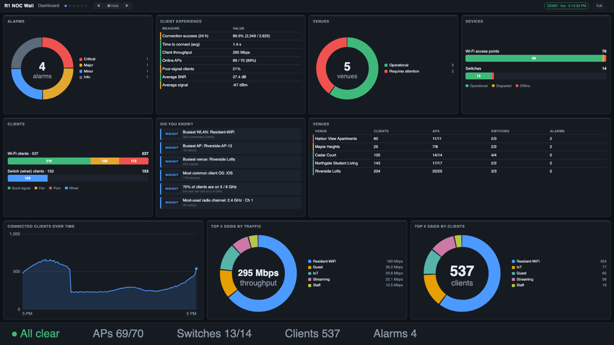

R1 NOC Wall
By Terry Henry
A server-side NOC wall display for RUCKUS One — for a single site or a whole managed-service business. One small server polls RUCKUS One; any browser on your network (wall TVs, kiosks, laptops) shows live, customizable dashboards. Design screens in a built-in editor, get full-screen alerts and Slack / Teams / email notifications, receive scheduled reports, and — as an MSP — see every customer on one wall.
Key features
- Looks and feels like RUCKUS One — the default screens mirror R1's own Dashboard, Wi-Fi and Switch reports; 1,100+ widgets (clients, APs, switches, ports, alarms, DPSK, guests, VLANs, Wi-Fi calling, throughput, RF quality, history…), auto-tiled to any screen, plus a drag-and-drop layout designer.
- MSP mode — connect one MSP key (R1's delegated access) and the app discovers every customer, or add a key per customer. Customer filter on every widget, fleet-wide statistics, customer health score and rankings, license and trial-expiry tracking, customer-named alerts, and a wall per customer.
- Switch events — flapping ports, port link changes, spanning-tree changes, err-disable events (from the app's own port polling), R1's switch event log, and loop / port-flap / DDoS incidents.
- Client experience (experimental) — connection success by stage (association → DHCP), time to connect, incidents, top applications, failures by SSID / AP / client maker, roaming, per venue.
- Alerts that can't be missed — rules take over every display until acknowledged, and notify Slack, Teams, email or a webhook.
- Built to run unattended — HTTPS and certificate management, editor sign-in, credential-free or encrypted configuration backup, in-place upgrade from a downloaded file with a start-up test and one-click rollback.
Featured in The RUCKUS Vibe, October 2026.